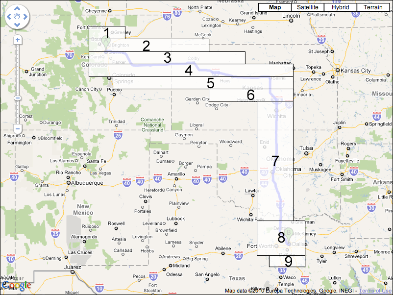

Step 1
Step 2
Step 3
Step 4
Step 5
Step 6
Step 7
Step 8
Step 9
Step 10
A grid is overlaid on the route with square cells spaced at the specified distance. The grid is centered on the bounding box of the route polyline,
and extends one cell further out in each direction than is necessary to cover the entire route.

Every cell in the grid that the route intersects with is identified. To do this the vertices on the route polyline are traversed, and the cell containing each vertex
is marked. If a cell that is marked does not share an edge with the cell for the previous vertex, the intermediate cells are also marked.

When a cell is marked, each of the 8 cells surrounding it are also marked.

When all of the route vertices have been traversed, any point within the specified distance of the route is guaranteed to be in one of the marked cells of the grid.

The marked cells are then merged into a set of non overlapping rectangular boxes. Two different approaches are taken to this. The first approach merges cells that
adjoin horizontally into a set of wide boxes, each one cell tall.

Each box is then compared to the boxes on the row below, and if there is a box of the same width and horizontal position they are merged.

The second approach follows the same technique, but first merges cells vertically into a set of tall boxes, each one cell wide.

Each of these boxes are then compared with the boxes in the column to the left, and if there is a box with the same height and vertical position they are merged.

When the two approaches are complete the number of boxes that resulted from each approach are compared.

The set of boxes that is smallest in number are returned to the application.